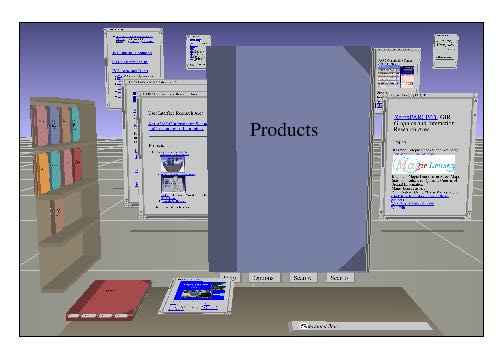

The WebBook and the Web Forager:
Video Use Scenarios for a World-Wide Web Information Workspace
Stuart K. Card, George G. Robertson, and William York
Xerox Palo Alto Research Center
3333 Coyote Hill Road
Palo Alto, California 94304
E-mail: {card | robertson | york}@parc.xerox.com
ABSTRACT
The World-Wide Web has achieved global connectivity stimulating the transition of computers from knowledge processors to knowledge sources, but the Web and its client software are seriously deficient for supporting user interactive use of this information. In particular, there is no support for the concept of a user workspace. This video presents the Web Forager and the WebBook, an information workspace that enables rapid interaction with materials gleaned from the Web.
Keywords
3D graphics, user interfaces, information access, World-Wide Web, information workspace, workspace.

Fig. 1: The Web Forager.
INTRODUCTION
The Web maintains a uniform cost structure. The time per interaction is fast, compared to the time to, say, go to the library, but it is slow compared to interaction rates, say the time to interact with pieces of paper on a desk. Empirically, users tend to interact repeatedly with small clusters of information, a property known as locality of reference [1, 2]As a result, information workspaces, that is, environments that are cost-tuned for doing information-based work, tend to exhibit a certain cost-structure of information: a small amount of information is organized to be available at very low cost, larger amounts are available at moderate costs, large amounts at high cost. But the Web does not exhibit the characteristics of a good information workspace. Users do not have the ability to create adequately tuned environments nor is sensemaking supported. The major effort to allow users to organize their workspaces has been the development of variants of the "hotlist" notion. In a typical hotlist, user actions are provided for adding or deleting an element to a hot list, arranging an element under a heading, changing it's position in the list, or searching for it. Because of the interface, these mechanisms are very slow to use and do not work well with more than a couple dozen entries.
In order to make the use of the Web better able to support information work (or for that matter, entertainment), we show in this video the notion of a WebBook[TM], an entity that allows the user to group together related Web pages (an elementary form of sensemaking) and to manipulate these pages as a unit. WebBooks and Web pages are contained in an environment called the Web Forager[TM] (see Fig. 1). This information workspace allows for the intensive, rapid interaction among pages and allows for the assembly on the user side of hierarchical cost-structures of information necessary for the task tuning of the workspace. (See [3])
Each of these has been implemented on a Silicon Graphics Iris computer using the Information Visualizer system [4] Efforts are underway to reimplement them on a PC and to continue advancing the design.
The videotape shows a set of scenarios in which uses of the Web Forager are illustrated. These center around assembling materials from the net and from previously created WebBooks to be used on a business trip. The tape shows running code with live Internet access and protocol parsing. The tape is more than an illustration, however. It was made as part of an early customer engagement activity, in which user's reactions and ideas are used to shape and refine the design.
REFERENCES
[1] D. A. Henderson, Jr. and S. K. Card, "Rooms: The use of multiple virtual workspaces to reduce space contention in a window-based graphical user interfaces," ACM Transactions on Graphics, vol. 5, pp. 211–241, 1986.
[2] S. K. Card, M. Pavel, and J. E. Farrell, "Window-based computer dialogues.," in Human-Computer Interaction—INTERACT ‘84, B. Shackel, Ed. Amsterdam: Elsevier Science Publishers, B. V. (North-Holland), 1984, pp. 51–56.
[3] S. K. Card, G. G. Robertson, and W. York, "The WebBook and the Web Forager: An Information Workspace for the World-Wide Web," in Proceedings of CHI ‘96, ACM Conference on Human Factors in Software, 1996.
[4] G. G. Robertson, S. K. Card, and J. D. Mackinlay, "Information visualization using 3D interactive animation.," Communications of the ACM, vol. 36, pp. 57–71, 1993